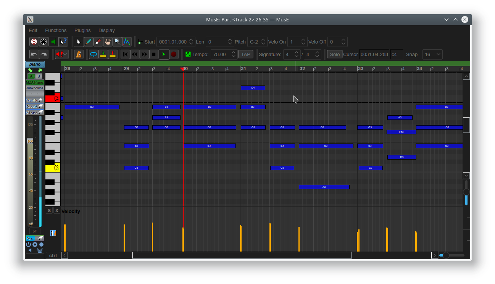
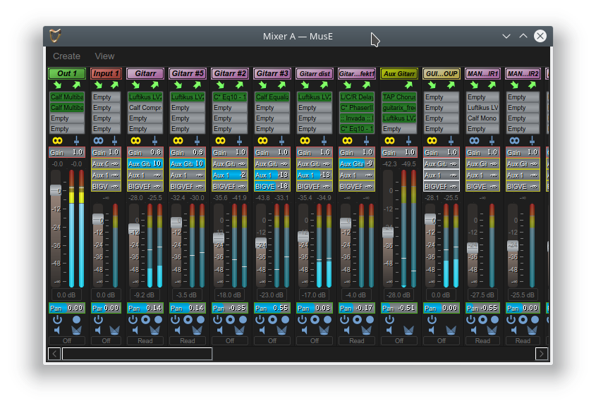

Editors




MusE is a full featured MIDI and audio sequencer with recording and editing functionality. Complete with plugin support and automation. See feature list below.
MusE was originally written by Werner Schweer and is now developed and maintained by the MusE development team. MusE aims to be a complete multitrack virtual studio for Linux.
It is published under the GNU General Public License.